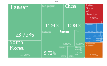
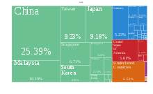

Semiconductor Industry
The semiconductor industry is the aggregate of companies engaged in the design and fabrication of semiconductors and semiconductor devices, such as transistors and integrated circuits. It formed around 1960, once the fabrication of semiconductor devices became a viable business. The industry's annual semiconductor sales revenue has since grown to over $481 billion, as of 2018.[1] The semiconductor industry is in turn the driving force behind the wider electronics industry,[2] with annual power electronics sales of £135 billion ($216 billion) as of 2011,[3] annual consumer electronics sales expected to reach $2.9 trillion by 2020,[4] tech industry sales expected to reach $5 trillion in 2019,[5] and e-commerce with over $29 trillion in 2017.[6] In 2019, 32.4% of the semiconductor market segment was for networks and communications devices.[7] In 2021, the sales of semiconductors reached a record $555.9 billion, up 26.2 percent with sales in China reaching $192.5 billion, according to the Semiconductor Industry Association. A record 1.15 trillion semiconductor units were shipped in the calendar year.[8] The semiconductors is projected to reach $ 726.73 billion by 2027. [9]
Industry Structure
The global semiconductor industry is dominated by companies from the United States, Taiwan, South Korea, Japan and the Netherlands.  Electronic integrated circuit export by country or region as of 2016, by HS4 trade classification. Export of discrete semiconductors as of 2016, by United Nations Harmonized Commodity Description and Coding Systems 4
Unique features of the industry include continuous growth but in a cyclical pattern with high volatility. While the current 20 year annual average growth of the semiconductor industry is on the order of 13%, this has been accompanied by equally above-average market volatility, which can lead to significant if not dramatic cyclical swings. This has required the need for high degrees of flexibility and innovation in order to constantly adjust to the rapid pace of change in the market as many products embedding semiconductor devices often have a very short life cycle. At the same time, the rate of constant price-performance improvement in the semiconductor industry is staggering. As a consequence, changes in the semiconductor market not only occur extremely rapidly but also anticipate changes in industries evolving at a slower pace. The semiconductor industry is widely recognized as a key driver and technology enabler for the whole electronics value chain.[10] The industry is based on the foundry model, which consists of semiconductor fabrication plants (foundries) and integrated circuit design operations, each belonging to separate companies or subsidiaries. Some companies, known as integrated device manufacturers, both design and manufacture semiconductors. The foundry model has resulted in consolidation among foundries. As of 2021, only three firms are able to manufacture the most advanced semiconductors: TSMC of Taiwan, Samsung of South Korea, and Intel of the United States.[11] Part of this is due to the high capital costs of building foundries. TSMC's latest factory, capable of fabricating 3 nm process semiconductors and completed in 2020, cost $19.5 billion.[11] Intel is considering outsourcing some production to TSMC. It currently can only produce 10 nm semiconductors, while TSMC and Samsung can both produce 5 nm.[11] GlobalFoundries, an American-headquartered firm, uses a 12 nm process for its most advanced chips due to the rapidly increasing development costs of smaller process nodes.[12]